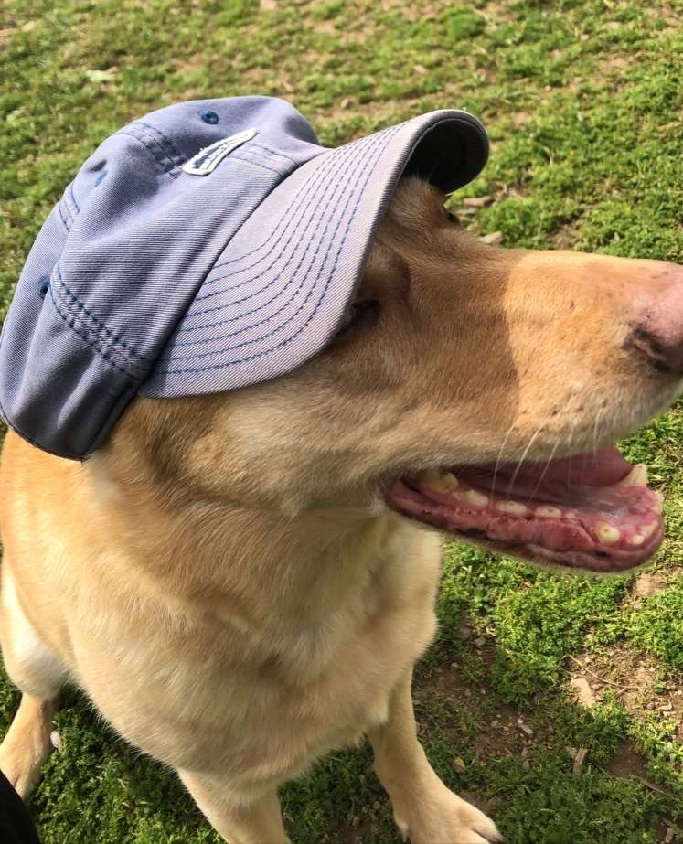

Adam's Personal Portfolio
This is my portfolio. I just finished sophmore year and this is my first time making a webpage.
I grew up in San Francisco where I went to a bilingual french school. My grandmother is french so it was very important to her and my mom that I was fluent in french as well. An interesting fact about me is that I am an Australian citizen since my father was born and raised in Sydney. In highschool I spent most of my free time playing basketball and soccer, as well as playing the piano. Since going to college I've taken up rock climbing, which has unintentionally replaced soccer. I've met some of my closest friends through rock climbing and have really enjoyed our trips together when we go climbing outside. I have a twin sister who goes to Boston University, she's my favorite study and travel buddy.
I now attend the University of Pennsylvania where I'm studying Math and Computer Science. I had no computer science experience going into college and actually thought I would double major in Math and Physics; I would take some CS courses to help with data analysis. But after my first programming class I realized that I was more interested in studying CS than physics.
Here are some of the projects I've worked on:
- Cosmology research assistant (summer 2019): Responsible for splicing and calibrating data obtain from HERA telescope in order to image deep space
- Sudoku Solver
- Implement MineSweeper from scratch
- Create a HashMap and TrieMap in Java
- Code an auto-correct program
Click to for my Github account
During these trying times I find myself doing two things most of the time: spending time with my dog and eating.
Here are some photos of my dog luna enjoying the sun:
Here are a couple pictures of food that I thought tasted particularly scrumptious: